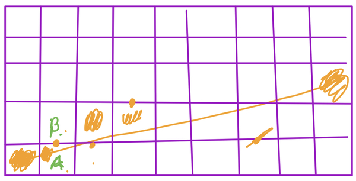
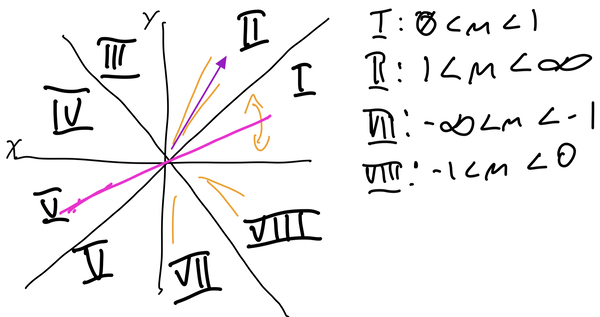

Chapter 2 Bresenham’s Line Algorithm
Section 2.1 The Problem
The particular problem of drawing a line on a computer screen, is that the physical pixels, and the data structures we use to represent images in memory, are bound by integer coordinates. We cannot exactly represent a line that in reality has an infinite amount of non-integer points along it. The purpose of a line algorithm is to find the pixels, using integer coordinates, that best approximate what the line should look like.
Section 2.2 Testing Potential Points
The basic concept of Bresenham’s Line Algorithm is to find potential pixels that we think would be good candidates for the line, test them, and then select the best one. To begin, we will start by restricting our line algorithm to only lines where \(0 \leq m \leq 1\text{,}\) this will help narrow doent the possible pixels. Eventually, we can modify it to work for the other octants. We will also assume that our endpoints \((x_{0}, y_{0}), (x_{1}, y_{1})\) only have integer coordinates. With those restrictions in place, if we are drawing a line as starting at \((x_{0}, y_{0})\text{,}\) we only have 2 candidate pixels, \(A: (x_{0}+1, y_{0})\) and \(B: (x_{0}+1, y_{0}+1)\text{:}\)

Section 2.3 Developing the Algorithm
Subsection 2.3.1 Round I: Testing Both Points
Since we know the slope is less than 1 (and positive), we know that we can create our line by moving forward in x by 1 until we reach \(x_{1}\text{.}\) Let’s assume there is a function \(f(x, y)\text{,}\) that we can use to test our candidate points, such that the smaller the value of the function, the closer \((x, y)\) is to the line. Putting this together, we have all we need for an initial algorithm:
x = x0, y = y0
while x <= x1.
plot(x, y) //actually draw the pixel
d0 = f(x+1, y)
d1 = f(x+1, y+1)
if d1 < d0 //meaning d1 is close to the real line
y++ //only increment y when necessary
x++ //we always increment x
Subsection 2.3.2 Round II: Testing the Midpoint
Instead of testing both possible points, we could test the midpoint, \((x+1, y+\dfrac{1}{2})\text{.}\) The midpoint of the possible pixels is on the border between them, which leaves us with 3 possibilities:
- The midpoint is above the line. This means the line is mostly below the midpoint, and we should choose the lower pixel, \((x+1, y)\text{.}\)
- The midpoint to below the line. This means the line is mostly above the midpoint, and we should choose the upper pixel, \((x+1, y+1)\text{.}\)
- The midpoint is on the line. In this case, either pixel is a good match.
Subsection 2.3.3 The Testing Function
Let’s look at \(f\text{.}\) We will use the standard form of a line:
\begin{equation*}
f(x, y) = Ax + By + C
\end{equation*}
Where \(A = (y1-y0)\text{,}\) \(B = -(x1-x0)\text{,}\) and \(C = b(y1-y0)\) (here \(b\) is the y-intercept). Since we are assuming \(0 \leq m \leq 1\text{,}\) and that our input coordinates are positive, then we know that \(A\) is also positive, and \(B\) is the only negative value in the function at all (ignoring \(C\)). That tells us that if \(f(x, y)\) is negative, then \(y\) is larger than it should be if \((x, y)\) were on the line, meaning that \((x, y)\) is above the line. Conversely, if \(f(x, y)\) is positive, then \(y\) is smaller than it should be if \((x, y)\) were on the line, meaning that \((x, y)\) is below the line. So now we can say that:
- If \((x+1, y+\dfrac{1}{2})\) is negative the midpoint is above the line.
- If \((x+1, y+\dfrac{1}{2})\) is positive the midpoint is below the line.
- If \((x+1, y+\dfrac{1}{2})\) is \(0\) the midpoint is on the line
This brings us to the next iteration of the algorithm:
x = x0, y = y0
d = f(x+1, y+1/2)
while x <= x1
plot(x, y) //actually draw the pixel
if d > 0 //+d value means the m.p. is below the line
y++ //only increment y when necessary
x++ //we always increment x
d = f(x, y)
Subsection 2.3.4 Round III: Testing No Points!
The first time we run \(f\) is on \((x_{0}+1, y_{0}+\dfrac{1}{2})\text{:}\)
\begin{equation*}
\begin{aligned}
f(x_{0}+1, y_{0}+\dfrac{1}{2}) \amp= A(x_{0}+1) + B(y_{0}+\dfrac{1}{2}) + C \\
f(x_{0}+1, y_{0}+\dfrac{1}{2}) \amp= Ax_{0} + By_{0} + C + A + \dfrac{1}{2}B \\
f(x_{0}+1, y_{0}+\dfrac{1}{2}) \amp= f(x_{0}, y_{0}) + A + \dfrac{1}{2}B \\
f(x_{0}+1, y_{0}+\dfrac{1}{2}) \amp= A + \dfrac{1}{2}B
\end{aligned}
\end{equation*}
\((x_{0}, y_{0})\) is on the line so we know \(f(x_{0}, y_{0}) = 0\text{.}\) This results in an initial calculation based on values that are straightforward to get given the endpoints of the line. This is not a huge benefit though, since we’re still calculating \(f\) repeatedly inside our loop. So let’s think about what’s happening inside the loop. Each time the loop runs, we add 1 to \(x\text{,}\) and sometimes we add 1 to \(y\text{.}\) Look at what happens when we choose \((x+1, y+1)\text{.}\)
\begin{equation*}
\begin{aligned}
f(x+1, y+1) \amp= A(x+1) + B(y+1) + C \\
f(x+1, y+1) \amp= Ax + By + C + A + B \\
f(x+1, y+1) \amp= f(x, y) + A + B
\end{aligned}
\end{equation*}
In our code,
d represents the previous value of \(f\text{,}\) calculated as \(f(x, y)\text{,}\) then if we use \((x+1, y+1)\text{,}\) the result is d + A + B. In general, every time we add 1 to x, we must add A to d, and every time we add 1 to y, we must add B to d. This means we can remove \(f\) from our algorithm entirely, giving us (this version starts by multiplying A and B by 2 in order to keep all values as integers):
x = x0, y = y0
A = 2(y1 - y0)
B = -2(x1 - x0)
d = A + 1/2B
while x <= x1
plot(x, y)
if d > 0
y++
d+= B
x++
d+= A
Another way to think about this algorithm is to consider
d as a variable that accumulates how off from the true line we have become. If we were always exactly on the line (this is the case for slopes 1, 0 and undefined), we’d be adding 0 to d each loop iteration. Given that we are starting with positive slopes less than 1, our loop is designed to always increase x, and occasionally, when d has accumulated too much error, we need to increase y. A is based off the change in y, which is always positive, B is the negation in the change in x, which is always negative. When d becomes negative overall, it means we’ve gone too far from the line, and need to make it positive by adding A and also increasing in y.Now we need to revisit our initial restriction, that \(0 \leq m \leq 1\text{.}\) In graphics, we often take the coordinate plan and break it up into 8 sections, called octants:

In order to have a fully functioning line algorithm, we need to handle any slope. Thankfully, we can ignore octants III - V, because those slopes correspond to lines in octants I, II, VII and VIII. To translate our octant 1 algorithm to another octant, we need to look at what has changed, and how that impacts the calculations. In octant II, \(1 \leq m \leq \infty\text{,}\) or, the line goes up more often than it goes across. This means:
- Our loop should be based on y values:
while y <= y1. - Our loop should always run
y++andd+=B, and only runx++andd+=Ainside a conditional statment. - The first midpoint is based off of \(f(x_{0}+\dfrac{1}{2}, y_{0}+1)\text{:}\)
d = 1/2A + B. Ais positive, and since we are always addingAtod, the trigger for increasingxshould bed < 0, so that the neagative value,Bcan correct the overly positive error.